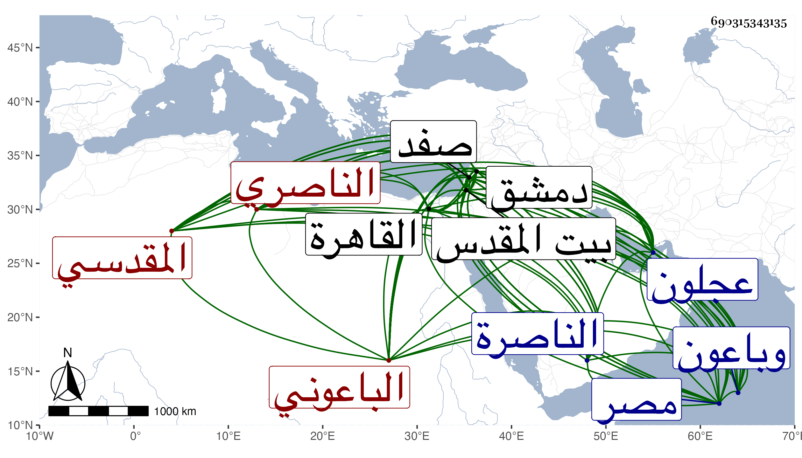

0902Sakhawi.DawLamic.ITO20230111-ara1.EIS1600.690315343135
Biography ID: 690315343135
655
أحمد بن ناصر بن خليفة بن فرج بن عبد الله بن يحيى بن عبد الرحمن الشهاب المقدسي الباعوني الناصري ، وباعون بالقرب من عجلون من عمل صفد كان أبوه منها فانتقل إلى الناصرة من عمل صفد وأيضا الشافعي نزيل دمشق والد إبراهيم ومحمد ويوسف المذكورين . ولد بالناصرة سنة إحدى وخمسين وسبعمائة تقريبا ونشأ بها فحفظ القرآن والمنهاجين الفرعي والأصلي وألفية ابن مالك وغيرها وعرض محافيظه على التاج السبكي والشمس بن خطيب يبرود والجمال بن قاضي الزبداني وابن قاضي شهبة وغيرهم وأخذ عنهم والعماد الحسباني الفقه ، وعن أبي العباس العنابي تلميذ أبي حيان النحو وأجاز له ، وسمع على زغلش وابن أميلة والشمس بن المحب أصحاب الفخر بن البخاري في آخرين ، وكتب الخط الحسن وأقام بصفد إلى بعيد التسعين وسبعمائة ، وجرت له مع أهلها كائنة لكونه مدح منطاش وغض من برقوق فخرج منها خائفا يترقب حتى قدم القاهرة ونزل سعيد السعداء وكان السالمي يعرفه من صفد فنوه به عند الظاهر برقوق حتى أحضره عنده وقربه وعامله معاملة أهل الصلاح وزاد في إكرامه وولاه خطابة جامع بني أمية بدمشق ثم القضاء بها وسار سيرة مرضية في سلوك الحق وعدم المحاباة مع الحرمة الوافرة ثم امتحن لكونه امتنع من إقراض السلطان من مال الأيتام بالعزل والإهانة بالسجن ونحوه بعد المبالغة في التنقيب عليه وعدم وجودهم كبير أمر يتعلقون به وإن كان المرء لا يخلو من حاسد ثم أطلق ولزم داره ثم استقر في سنة اثنتين وثمانمائة في خطابة بيت المقدس وتوجه فباشرها مدة ثم أضاف إليه الناصر فرج معها قضاء دمشق وذلك في صفر سنة اثنتي عشرة فباشر ذلك مباشرة حسنة بعفة ونزاهة ومداراة وحرمة ثم عزل فتوجه إلى بيت المقدس على خطابته ثم عاد إلى دمشق ولما استقر الأمر للمستعين بعد الناصر ولاه قضاء الديار المصرية لكونه ممن قام في خلعه وأثبت المحضر المكتتب في حقه ثم صرف عن قرب قبل أن يباشر لا بنفسه ولا بنائبه ، ولذا أعرض شيخنا عن ذكره في رفع الأصر وأثبته في ذيله وقد حدث روى لنا عنه ولده وشيخنا وجماعة ، وكان إماما بارعا دينا فاضلا آمرا بالمعروف وناهيا عن المنكر شكلا حسنا منور الشيبة طوالا ذا نظم ونثر فائقين ومن نظمه :
| سلم إلى الله ماقضاه | لا بد أن ينفذ القضاء |
| سيجعل الله بعد عسر | يسرا به يذهب العناء |
| يدبر الأمر منه جمعا | ويفعل الله ما يشاء |
ومنه :
| ولما رأت شيب رأسي بكت | وقالت عسى غير هذا عسى |
| فقلت البياض لباس الملوك | فإن السواد لباس الأسى |
| فقالت صدقت ولكنه | قليل النفاق بسوق النسا |
وله قصيدة في العقيدة أولها :
| أثبت صفات العلى وأنف الشبيه فقد | أخطا الذين على ما قد بدا جمدوا |
| وضل قوم على التأويل قد عكفوا | فعطلوا وطريق الحق مقتصد |
| ألله حي سميع مبصر وله | علم محيط مريد قادر صمد |
| له كلام قديم قائم أبدا | بذاته وهو فرد واحد أحد |
مات في ثالث أو رابع المحرم سنة ست عشرة بدمشق ودفن بتربة وبزاوية الشيخ أبي بكر بن داود . قال المقريزي وسميت القرية باعونة من أجل أنه كان موضعها دير للنصارى اسم راهبة باعونة فلما أزيل الدير وعملت القرية مكانه عرفت به . قال وكان أبوه حائكا بها ثم اتجر في البز وركض به في البلاد وولد له أحمد وإسماعيل فأما إسماعيل فصحب الفقراء ونظر في التصوف وسكن صفد وناب في قضاء الناصرة عن قاضي صفد وبه تخرج أخوه هذا وأقرأه في المنهاج إلى أن قال وكان يعني صاحب الترجمة رجلا طوالا مهابا عليه خفر وله منظق فصيح وعبارة عذبة وقدرة على سرعة النظم وارتجال الخطب مع جميل المحاضرة وحسن المذاكرة وكثرة الفوائد وسرعة البكاء والعفة الزائدة لكنه كان شديد الإعجاب بنفسه . وذكره شيخنا في معجمه وقال إنه اشتغل في الأدب وتفقه قليلا وسمع الحديث ، وكان شاعرا مجيدا وكاتبا مطيقا وخطيبا مصقعا قال واتفق أنه خرج ليخطب فلم ير السلطان الناصر حضر فاستمر جالسا على المنبر قدر ثلث ساعة حتى جاء فقام حينئذ وأشار إلى المؤذنين بالأذان فعاب عليه جماعة ذلك ، قال وكان كثير المنامات جدا حتى كان يتهم في الكثير منها ، وكان يتعانى الوعظ ويكثر البكاء ولكنه كان لا يستحضر من الفقه إلا قليلا ، وقال اجتمعت به ببيت المقدس وسمعت عليه الثالث من فوائد ابن الأخشيد وسمعت من نظمه وفوائده ، وقال في أنبائه إنه نظم كتابا في التفسير ، وكان ذكيا فطنا قال وكان عريض الدعوى كثير المنامات التي يشهد سامعها بأنها باطلة ، قال وكان سريع الدمعة جدا مقتدرا على ذلك حتى حكى لي من شاهده يبكي بعين واحدة قال وكان عفيفا نزها لا يحابي ولا يداهن ولا يعاب إلا بالإعجاب والتزيد في الكلام والمنامات ، وقال التقى بن قاضي شهبة إنه كان يكاتب السلطان فيما يريد فيرفع الجواب بما يختار وانضبطت الأوقاف في أيامه وحصل للفقهاء مالا كانوا لا يصلون إليه قبله وانتزع مشيخة الشيوخ من ابن أبي الطيب كاتب السر قال ووقعت له أمور تغير خاطر برقوق عليه منها وكان طلب منه اقتراضا من مال الأيتام فامتنع فعزله وعقدت له بعد عزله مجالس ولفقوا عليه قضايا فلم يسمع عليه مع كثرة من تعصب عليه أنه ارتشى في حكم ولا أخذ من قضاة البر شيئا ، قال وكان خطيبا بليغا له اليد الطولى في النظم والنثر والقيام التام في الحق ، وكتب بخطه كثيرا وجمع أشياء ، وممن ترجمه ابن خطيب الناصرية والمقريزي في عقوده وأنشد عن الجلال بن خطيب داربا فيه لما ولي قضاء دمشق :
| قضاء دمشق بادل | لسه خلتك لا يراعوني |
| رميت بكل مصقعة | وبعد الكل باعوني |
